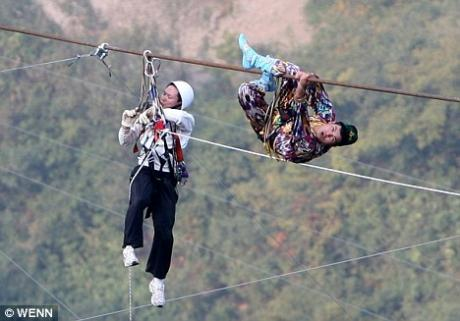

Traitement des erreurs

Il est très important que le code soit robuste.
Ce n'est pas une raison pour rendre illisible le reste du code.
Le code de traitement des erreurs doit être séparé de la logique.
Autant que possible, les lignes décrivant la logique ne doivent pas être
entrelacées de tests d'erreurs
.
Les exceptions permettent de gérer ce problème plus facilement.
Some chat messages
- A message
- Another message
- A third message